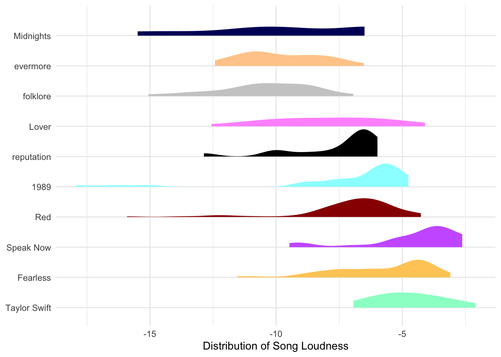

#install.packages("spotifyr")
#install.packages("httr")
library(spotifyr)
library(tidyverse)
library(knitr)
library(httr)
library(lubridate)Can I ask you a question? Have you ever wondered which of Taylor Swift’s songs are the most danceable? Which songs are saddest? Slowest? Lowest? Well, if the answer is no, you’re playing a stupid game and you’ve won a stupid prize – leave now. Assuming the answer to any of those questions was an incredibly enthusiastic YES, then you’re the lucky one.
So, R you ready for it?
DISCLAIMER: Obviously I’m a very busy important person so I’m not going to answer ALL of your questions today, but I’ll try my very best to keep coming back and working on this, so please come back and check it out.
Here are the packages we’ll be using.
Spotify API
Using (Spotify’s Web API)[https://developer.spotify.com/documentation/web-api], we can access all sorts of fun information about an artist. If you’re following along at home and wondering if this is the explicit version with all those Xs below, no. I’m just avoiding giving you my super secret client_id and client_secret. You can get your own by visiting your Spotify developer dashboard.
# albums we/I don't want included in the data
ew_david <- c("Live From Clear Channel Stripped 2008",
"Speak Now World Tour Live",
"reputation Stadium Tour Surprise Song Playlist")#Sys.setenv(SPOTIFY_CLIENT_ID = 'XXXXXXXXXXXX')
#Sys.setenv(SPOTIFY_CLIENT_SECRET = 'XXXXXXXXXXXX')
access_token <- get_spotify_access_token()
swifty <- get_artist_audio_features('taylor swift') |>
filter(!album_name %in% ew_david)To give you an idea of the sort of information we now have at our fingertips, here’s an example row of data, for everyone’s favorite song:
swifty |>
filter(track_name ==
"All Too Well (10 Minute Version) (Taylor's Version) (From The Vault)") |>
kable()| artist_name | artist_id | album_id | album_type | album_images | album_release_date | album_release_year | album_release_date_precision | danceability | energy | key | loudness | mode | speechiness | acousticness | instrumentalness | liveness | valence | tempo | track_id | analysis_url | time_signature | artists | available_markets | disc_number | duration_ms | explicit | track_href | is_local | track_name | track_preview_url | track_number | type | track_uri | external_urls.spotify | album_name | key_name | mode_name | key_mode |
|---|---|---|---|---|---|---|---|---|---|---|---|---|---|---|---|---|---|---|---|---|---|---|---|---|---|---|---|---|---|---|---|---|---|---|---|---|---|---|
| Taylor Swift | 06HL4z0CvFAxyc27GXpf02 | 6kZ42qRrzov54LcAk4onW9 | album | 640 , 300 , 64 , https://i.scdn.co/image/ab67616d0000b273318443aab3531a0558e79a4d, https://i.scdn.co/image/ab67616d00001e02318443aab3531a0558e79a4d, https://i.scdn.co/image/ab67616d00004851318443aab3531a0558e79a4d, 640 , 300 , 64 | 2021-11-12 | 2021 | day | 0.631 | 0.518 | 0 | -8.771 | 1 | 0.0303 | 0.274 | 0 | 0.088 | 0.205 | 93.023 | 5enxwA8aAbwZbf5qCHORXi | https://api.spotify.com/v1/audio-analysis/5enxwA8aAbwZbf5qCHORXi | 4 | https://api.spotify.com/v1/artists/06HL4z0CvFAxyc27GXpf02, 06HL4z0CvFAxyc27GXpf02 , Taylor Swift , artist , spotify:artist:06HL4z0CvFAxyc27GXpf02 , https://open.spotify.com/artist/06HL4z0CvFAxyc27GXpf02 | AR, AU, AT, BE, BO, BR, BG, CA, CL, CO, CR, CY, CZ, DK, DO, DE, EC, EE, SV, FI, FR, GR, GT, HN, HK, HU, IS, IE, IT, LV, LT, LU, MY, MT, MX, NL, NZ, NI, NO, PA, PY, PE, PH, PL, PT, SG, SK, ES, SE, CH, TW, TR, UY, US, GB, AD, LI, MC, ID, JP, TH, VN, RO, IL, ZA, SA, AE, BH, QA, OM, KW, EG, MA, DZ, TN, LB, JO, PS, IN, BY, KZ, MD, UA, AL, BA, HR, ME, MK, RS, SI, KR, BD, PK, LK, GH, KE, NG, TZ, UG, AG, AM, BS, BB, BZ, BT, BW, BF, CV, CW, DM, FJ, GM, GE, GD, GW, GY, HT, JM, KI, LS, LR, MW, MV, ML, MH, FM, NA, NR, NE, PW, PG, WS, SM, ST, SN, SC, SL, SB, KN, LC, VC, SR, TL, TO, TT, TV, VU, AZ, BN, BI, KH, CM, TD, KM, GQ, SZ, GA, GN, KG, LA, MO, MR, MN, NP, RW, TG, UZ, ZW, BJ, MG, MU, MZ, AO, CI, DJ, ZM, CD, CG, IQ, LY, TJ, VE, ET, XK | 1 | 613026 | TRUE | https://api.spotify.com/v1/tracks/5enxwA8aAbwZbf5qCHORXi | FALSE | All Too Well (10 Minute Version) (Taylor’s Version) (From The Vault) | NA | 30 | track | spotify:track:5enxwA8aAbwZbf5qCHORXi | https://open.spotify.com/track/5enxwA8aAbwZbf5qCHORXi | Red (Taylor’s Version) | C | major | C major |
Summary
You may already know this, but here’s a summary of Taylor’s discography.
swifty |>
summarize(`Number of Songs` = n_distinct(track_name),
`Albums Released` = n_distinct(album_name),
`Earliest Release` = min(year(album_release_date)),
`Most Recent Release` = max(year(album_release_date)),
`Songs Featuring Other Artists` = sum(str_detect(track_name, "feat")),
`Songs with Explicit Labels` = sum(explicit),
`Shortest Song Minutes` = min(duration_ms)/60000,
`Longest Song Minutes` = max(duration_ms)/60000,
`Average Song Minutes` = mean(duration_ms)/60000
) |>
pivot_longer(cols = everything()) |>
mutate(value = as.character(round(value, 2))) |>
kable()| name | value |
|---|---|
| Number of Songs | 258 |
| Albums Released | 21 |
| Earliest Release | 2006 |
| Most Recent Release | 2023 |
| Songs Featuring Other Artists | 25 |
| Songs with Explicit Labels | 54 |
| Shortest Song Minutes | 1.79 |
| Longest Song Minutes | 10.22 |
| Average Song Minutes | 3.96 |
Metrics
Some of the information is obvious, but others I had to do some exploring to learn more about. Let’s review:
danceability: Danceability describes how suitable a track is for dancing based on a combination of musical elements including tempo, rhythm stability, beat strength, and overall regularity. A value of 0.0 is least danceable and 1.0 is most danceable.
energy: Energy is a measure from 0.0 to 1.0 and represents a perceptual measure of intensity and activity. Typically, energetic tracks feel fast, loud, and noisy. For example, death metal has high energy, while a Bach prelude scores low on the scale. Perceptual features contributing to this attribute include dynamic range, perceived loudness, timbre, onset rate, and general entropy.
key: The key the track is in. Integers map to pitches using standard Pitch Class notation. E.g. 0 = C, 1 = C♯/D♭, 2 = D, and so on. If no key was detected, the value is -1. (https://en.wikipedia.org/wiki/Pitch_class). Key_mode is a more helpful interpretation for us.
loudness: The overall loudness of a track in decibels (dB). Loudness values are averaged across the entire track and are useful for comparing relative loudness of tracks. Loudness is the quality of a sound that is the primary psychological correlate of physical strength (amplitude). Values typically range between -60 and 0 db.
mode: Mode indicates the modality (major or minor) of a track, the type of scale from which its melodic content is derived. Major is represented by 1 and minor is 0.
speechiness: Speechiness detects the presence of spoken words in a track. The more exclusively speech-like the recording (e.g. talk show, audio book, poetry), the closer to 1.0 the attribute value. Values above 0.66 describe tracks that are probably made entirely of spoken words. Values between 0.33 and 0.66 describe tracks that may contain both music and speech, either in sections or layered, including such cases as rap music. Values below 0.33 most likely represent music and other non-speech-like tracks.
acousticness: A confidence measure from 0.0 to 1.0 of whether the track is acoustic. 1.0 represents high confidence the track is acoustic.
instrumentalness: Predicts whether a track contains no vocals. “Ooh” and “aah” sounds are treated as instrumental in this context. Rap or spoken word tracks are clearly “vocal”. The closer the instrumentalness value is to 1.0, the greater likelihood the track contains no vocal content. Values above 0.5 are intended to represent instrumental tracks, but confidence is higher as the value approaches 1.0.
liveness: Detects the presence of an audience in the recording. Higher liveness values represent an increased probability that the track was performed live. A value above 0.8 provides strong likelihood that the track is live.
valence: A measure from 0.0 to 1.0 describing the musical positiveness conveyed by a track. Tracks with high valence sound more positive (e.g. happy, cheerful, euphoric), while tracks with low valence sound more negative (e.g. sad, depressed, angry).
tempo: The overall estimated tempo of a track in beats per minute (BPM). In musical terminology, tempo is the speed or pace of a given piece and derives directly from the average beat duration.
Taylor’s Version vs. Not(?) Taylor’s Version
For my first bit of exploration, I’m wondering how much a difference Taylor made in how Taylory Taylor is.
First, let’s add a boolean that tells us if a song is Taylor’s Version. Dirty data problem 1 of ???: tick marks vs. apostrophes. And this is why we use unicode, friends.
swifty <- swifty |>
mutate(isTV = str_detect(track_name, "Taylor's Version|Taylor’s Version")) Now that we have TV as it’s own variable, we can make our data one step closer to at least first normal form (https://www.geeksforgeeks.org/normal-forms-in-dbms/) by making sure that track name contains only one type of information: the track name.
Tip: stringr
Stringr is one of my favorite tools in the tidyverse, especially for dealing with any sort of text data. Here I used:
str_remove()to remove (Taylor’s Version) from song titles to better group them laterstr_squish()to remove any whitespace from the start and end, and reduce any double spaces within a song to a single spacestr_to_lower()is the cute little sister ofstr_to_upper()and converts characters to lowercasestr_replace_all()replaces all of the target string (in this case all punctuation) with the replacement string (in this case nothingness)
swifty <- swifty |>
mutate(track_name = str_remove(track_name, "\\(Taylor's Version\\)|\\(Taylor’s Version\\)"),
track_name = str_squish(track_name),
track_name = str_to_lower(track_name),
track_name = str_replace_all(track_name, "[[:punct:]]", ""))Now we can grab just our songs that have a TV and a no-TV.
songs_with_tvs <- swifty |>
group_by(track_name) |>
summarize(n = n(),
hasTV = sum(isTV)) |>
filter(n > 1 & hasTV > 0)Let’s take a look at danceability first. Looks like there is a general trend for Taylor’s Version of songs to be less danceable.
swifty |>
filter(track_name %in% songs_with_tvs$track_name) |>
group_by(track_name, isTV) |>
summarize(dance = mean(danceability)) |>
ggplot(aes(x = isTV, y = dance, group = track_name)) +
geom_point() +
geom_line(method = "lm")
References:
– while I’m pretty confident in my brain’s ability to store endless lyrics, this website made possible all of the lyrics and references found throughout this project